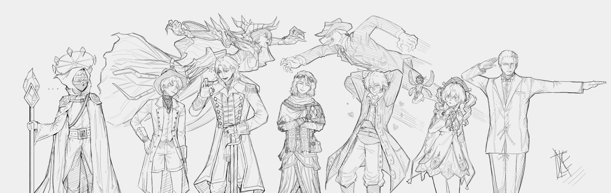

January 2026 – June 2026
The One Shot Original is a simple campaign that I came up using the existing world's structures and reimagined them such that you can spin a story in any direction you choose given a subset of the available characters in the narrative in a compact 28 episodic series.

Key Items are a special category of permanent items that players can obtain only once in-game. They serve various important purposes such as unlocking new mechanics or streamlining/altering existing ones. A Key Item's use may either be automatic or require manual interaction. (Unless it leaves your inventory and is retrieved/returned). Examining a key Item COULD result in another discovery.
Consumables can help the Fools better deal with all kinds of danger they might come across in the journey. They can buff, debuff, cleanse, inflict, and deal damage depending on their text. Careful! All consumables have a item durability of ONE and because of this- CAN ONLY BE USED ONCE.
Readable Items are collectible items which can be obtained from Dungeons or Quests. They feature stories or reveal history and lore for your reading pleasure. I know you wont read them. Some Readable Items are time-gated and can only be obtained if the previous part was already obtained. For example, Letter from the Dean 1 and Letter from the Dean 2. You could not read the 2nd without having read the 1st.
Currency is the primary economic resource in the game. It can be obtained through various means such as completing quests, selling items, or defeating enemies. Every world has its own unique currency system. Every time period has its own unique currency system. Be mindful of this as you go around and trade with Merchants in Towns.
Quests are objectives that players can undertake to progress the story and earn rewards. They can be main story quests or side quests, each with their own unique challenges and outcomes.
Dungeons are challenging areas that players can explore to find treasures, defeat powerful enemies, and uncover hidden secrets. Each dungeon has its own unique layout, enemies, and rewards.
Repositioning allows you to change your character's position within battle. This can be useful for strategic reasons or to access different areas.
You can navigate the world via your map! You'd be cooked without one! Simply point to your destination and It will pin your objective~ automatically revealing the location and the estimated length of time before your arrival. Careful not to accumulate TOO much Exhaustion on your travels, the journey won't do you good if you drop dead. If you wish to travel somewhere else, simply remove your pin or reset your map.
Towns are safe havens where players can rest, trade, and interact with non-player characters. They serve as central hubs for the game world, offering various services and information. There are stores in every town. Merchants can be found in every town, ready to buy and sell items taking your available currency.
Through the basis of sorrow, happiness can be achieved.
Maintaining relations are important, you know. No one will shed a tear if die by your lonesome.
Sanity is a measure of your character's mental stability. It can be affected by various events and choices throughout the game. Low Sanity can lead to negative effects and gameplay consequences. If your Sanity reaches zero, your character breaks into psychosis.
HP (Health Points) represent your character's physical well-being. MP (Magic Potential) represents your character's magical energy. Both are crucial for survival and spellcasting. If your HP reaches zero, your character is defeated. If your MP reaches zero, it will not replenish until long rest.
STR, DEF, AGL, WIS, MIND, CHAR.
Stay tuned, there are a lot of them...
Burinotengu is a charismatic yet deeply weary Ranger. While appearing easygoing, free spirited, and cocky for his size, he is a deeply resilient, reliable, and "sweet" individual. He operates on a whim, but prefers to solve problems via brawn before brain power. Because of this gung-ho shoot first ask questions later mentality: Burinotengu is extremely optimistic, flamboyant, and reckless. He’s delusional in his choice of woman but won’t stop at anything if it means protecting his harem or his friends.
Donald has long, light-gray hair that goes down towards his knees. He has a darker gray patch of hair towards the top of his head and white all through out. He has front bangs that are tied in a bun. He has blue eyes with light blue highlights towards the bottom of his iris. He wears a cross over his chest in reverence to Floo.
Stoic. Protective. Kind. He doesn’t understand everything, but he doesn’t need to. He knows that he needs to uphold what he believes is right in his heart. Unwavering duty, honor, profound loyalty, and Perseverance. He shows Discipline Unlike others hes is, often silent and focused purely on the mission for what NEEDS to be done, which was clear when the party wanted to do other things of lesser relevance. He does seem to also let actions speak for them sometimes. Because of his W morals, He won’t hesitate to challenge even his closest friends if something feels off or crosses a line. He’s protective of those he cares about, constantly throwing himself in harms way for them time and time again. I think his sense of humor kinda slips through in the darkest of times.
An easygoing and approachable woman who's smile can welcome the light of god into the most wary of hearts (In theory lol). She can be oblivious at times, and enjoys going with the flow and supporting her loved ones, but when it comes down to her fundamental beliefs, she's staunch and unwavering within them. Her greatest aspiration is to be a person anyone in need can come to for help and protection, so she can spread the grace the one true Goddess had given her once before.
Aloof, action-orientated young man that prefers people who get straight to the point with both their actions and words, being very casual and carefree outside of intense situations, where he's instead brash and quick to try and resolve conflicts with either direct violence or threats. Not at all above committing crimes or lying through his teeth to achieve a desired result, so long as he deems the benefit better than the risk.
Tazer Hymm. A golden statue who claims to have came to life from a strike of lightning. The things he speaks seems so unorthodox yet it seems to have reason. He is a man who believes in fair dealings and is lure for becoming a merchant is for success, to finally put his strange knowledge to use. Morals is something he strongly believes in as stated by tazer himself, "To do good is to receive good but to do bad is to be consumed slowly.". it's unclear if he is a supernatural entity or one of science or perhaps something... divine which strives him to at least understand why he exists.
Gregory is silly, chaotic, and full of playful energy. She's genuinely kind at heart, but loves causing mischief, that's why she grief's people.. Even when she's being chaotic, it usually comes from a good place, unless she doesn't like you then uh... she's probably trying to kill you secretly. As a demonically cursed doll, Gregory can only take the form of her former strength by exuding and projecting out a mass amount of mana to sustain it.
He is a person who likes to use his logic, is sometimes quite reserved, always analytical and very passionate about the things he cares about. He doesn’t want to be friends with everyone, but he will do anything for the people he does care for. If he hates you, he hates you. If he likes you, he really likes you. His main drive is to succeed in becoming the Exalted Wizard - A proper successor to Rose. He also kinda likes aura farming, but not as much as some others.
A man, a myth, a genius these are few of many titles this young prodigy has been giving in his quick life and many more achievements still in the wait. And that's a small sample of who I the great genius Nikola K Tesla am, don't worry you my applaud now, and by all means admire.
Timid, anxious, and deeply empathetic. She's actually quite socially anxious, hence why she does not talk as much, well unless she really has to or is in a position where she's forced to. Of course she'll talk more to the people that she knows and trusts, her little bitchitis is not chronicle, as she WILL speak up. Despite that she's quite compassionate and can be silly at times too. Unfortunately, she can also be quite possessive. She's perceptive in terms of detail...And is pretty smart with those details too.
A gallery is attached to the repository!